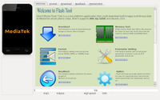
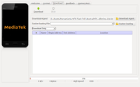
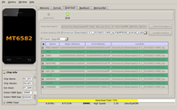

flash tool
Dieser Artikel wurde für die folgenden Ubuntu-Versionen getestet:
Ubuntu 16.04 Xenial Xerus
Ubuntu 14.04 Trusty Tahr
Zum Verständnis dieses Artikels sind folgende Seiten hilfreich:
SP flash tool wird von BQ  empfohlen um Betriebssysteme auf BQ Smartphones zu installieren. Die Installation erfolgt durch das Überschreiben ("Flashen") des Flash-Speichers des Smartphones mit einer neuen Firmware. Das Programm wird von BQ auf der offiziellen Downloadseite im Supportbereich angeboten. BQ bietet für die Aquaris Modelle neben der Firmware mit Ubuntu Touch auch eine Firmware mit Android an. Neben diesen offiziellen Dateien von BQ kann z.B. auch ein Recovery Image (ROM zur Wiederherstellung) eines Drittanbieters auf das Telefon installiert werden. Die Recovery eines Telefons kann man sich ähnlich wie das BIOS bei einem PC vorstellen. Sie bietet grundlegende Bedienungsmöglichkeiten des Telefons, ohne dass ein Betriebssystem auf dem Telefon geladen wird.
empfohlen um Betriebssysteme auf BQ Smartphones zu installieren. Die Installation erfolgt durch das Überschreiben ("Flashen") des Flash-Speichers des Smartphones mit einer neuen Firmware. Das Programm wird von BQ auf der offiziellen Downloadseite im Supportbereich angeboten. BQ bietet für die Aquaris Modelle neben der Firmware mit Ubuntu Touch auch eine Firmware mit Android an. Neben diesen offiziellen Dateien von BQ kann z.B. auch ein Recovery Image (ROM zur Wiederherstellung) eines Drittanbieters auf das Telefon installiert werden. Die Recovery eines Telefons kann man sich ähnlich wie das BIOS bei einem PC vorstellen. Sie bietet grundlegende Bedienungsmöglichkeiten des Telefons, ohne dass ein Betriebssystem auf dem Telefon geladen wird.
Dieser Artikel beschreibt das Flashen der Ubuntu Touch und Android Firmware für das BQ Aquaris Smartphone. Auch ein Hardreset, d.h. die Wiederherstellung des Systems in den Werkszustand, kann durch das Flashen der Firmware mit dem flash tool vorgenommen werden. Außerdem wird das Flashen einer Custom-ROM vorgestellt, mit der bei Benutzung der Android-Firmware Root-Rechte[1] auf dem Smartphone freigeschaltet werden können. Generell kann das fehlerhafte Flashen bzw. Laden einer nicht passenden Datei auf das Gerät zu irreparablen Schäden am Smartphone führen, d.h. bei der Ausführung der Anleitung dieses Artikels ist größte Sorgfalt geboten.
Installation¶
|  |
| Startseite des flash tool unter Ubuntu. |
Auf der Supportseite von BQ  klickt man sich zu seinem Smartphone-Modell durch und kann wahlweise das flash tool für Ubuntu oder Windows herunterladen. Die zip-Dateien entpackt[2] man in einen beliebigen Ordner. Unter Ubuntu muss man das Programm im Terminal[3] mit
klickt man sich zu seinem Smartphone-Modell durch und kann wahlweise das flash tool für Ubuntu oder Windows herunterladen. Die zip-Dateien entpackt[2] man in einen beliebigen Ordner. Unter Ubuntu muss man das Programm im Terminal[3] mit
chmod u+x flash_tool.sh flash_tool
ausführbar machen[4]. Unter Windows meldet man sich mit einem Administratorkonto an und entpackt das ZIP-Archiv z.B. auf den Desktop. Man erhält die drei Unterordner Drivers ADB, Drivers Hard Reset und Herramienta MTK Flash Tool. In letzterem Unterordner kann man das Programm mit einem Doppelklick auf flash_tool.exe starten. Zusätzlich müssen unter Windows Treiber installiert werden wie hier  beschrieben. Da die install.bat von BQ nicht funktioniert, wird mit einem Editor[5] eine fixed_install.bat mit folgendem Inhalt angelegt:
beschrieben. Da die install.bat von BQ nicht funktioniert, wird mit einem Editor[5] eine fixed_install.bat mit folgendem Inhalt angelegt:
@echo off cls SET PLATFORM=x64 cd "%~dp0%\SmartPhoneDriver\" cd "%PLATFORM%\" echo **********Install SP unsigned inf********** dpinst.exe /PATH ".\Unsigned infs" /F /LM /SW /A echo Install complete! @echo. @echo. echo **********Install SP signed inf********** dpinst.exe /PATH ".\Infs" /F /LM /SW /A echo Install complete! @echo. @echo. pause
Diese wird im Unterordner Drivers Hard Reset gespeichert und ausgeführt.
Achtung!
Das obige Skript funktioniert für ein 64-bit Windows. Bei einem 32-bit Windows muss in der dritten Zeile SET PLATFORM=x86 statt SET PLATFORM=x64 eingetragen werden.
Hinweis:
Während der Installation zeigt Windows mehrere Hinweise auf unsignierte Treiber, die einfach bestätigt werden.
Flashen von Firmware und Recovery¶
Ubuntu Phone auf ein BQ Smartphone flashen¶
Um die Ubuntu Phone Firmware für das BQ Aquaris E4.5 bzw. die Ubuntu Phone Firmware für das BQ Aquaris E5 zu erhalten, ist die Eingabe der Seriennummer und eine Zustimmung zur EULA erforderlich, welche auf Spanisch vorliegt.
Die Firmware entpackt man dann in einen Ordner[2]. Als nächstes schaltet man das BQ Telefon aus. Dann öffnet man im Terminal[3] mit Root-Rechten[1] das flash tool[6]:
sudo sh flash_tool.sh
In Windows führt man stattdessen von einem Administratorkonto einen Klick auf flash_tool.exe aus.
|  |
| Download-Tab des flash tool unter Ubuntu. |
Man wechselt in den Tab Download und wählt unter "Scatter-loading file" die scatter-Datei aus dem heruntergeladenen und entpackten Firmware-Ordner. Dies ist eine .txt Datei.
Schließlich wählt man als Download-Option "Firmware Upgrade".
Achtung!
Das Telefon noch nicht an den Computer anschließen.
Jetzt klickt man auf "Download". Erst dann schließt man das BQ Telefon an den Computer an. Nun wird die Firmware auf das Telefon geladen.
Hinweis:
Windows: Es kann vorkommen, dass der Download nicht funktioniert, d.h. am unteren Fensterrand
des flash tools startet die Leiste mit der Dateiübertragung nicht, obwohl die Treiber
korrekt installiert sind und das Telefon z.B. auch im Windows Gerätemanager auftaucht.
Stattdessen leuchtet nur die rote LED am Telefon. In diesem Fall hilft es, das Telefon
im "Recovery Mode" zu booten. Dafür trennt man das USB-Kabel und hält die Tasten
Vol+ +
Vol- +  Power gedrückt, bis der Bildschirm kurz flackert. Das Telefon ist dann wieder aus. Dann drückt man im flash tool wie oben beschrieben auf "Download" und schließt das Telefon schnell per USB-Kabel an. Die Dateiübertragung startet dann.
Power gedrückt, bis der Bildschirm kurz flackert. Das Telefon ist dann wieder aus. Dann drückt man im flash tool wie oben beschrieben auf "Download" und schließt das Telefon schnell per USB-Kabel an. Die Dateiübertragung startet dann.
Sobald alles fertig ist, kann man das Telefon wieder vom Computer trennen und es einschalten. Nun hat man Ubuntu Phone auf dem Telefon installiert.
Problemlösung: BROM ERROR durch Modemmanager¶
Beim Flashen unter Linux kann es vorkommen, dass beim Versuch zu flashen (Anschließen des Telefons) ein Fenster mit einer Fehlermeldung "BROM ERROR" angezeigt wird. Das kann damit zusammenhängen, dass das Telefon beim Anschluss über USB falsch erkannt wird. Abhilfe schafft dann eine zeitweise Deinstallation des modemmanagers, der dafür sorgt, dass das Telefon bei aktiviertem Tethering im Netzwerk als Modem auftaucht.
Zuerst schließt man das flash tool. Dann deinstalliert man den Modemmanager.
sudo apt-get remove modemmanager sudo service udev restart
Dann wie beschrieben wieder das flash tool starten und den gesamten Flashvorgang neu beginnen.
Nach erfolgreichem Flashen kann man dann den Modemmanager wieder mit
sudo apt-get install modemmanager
installieren.
|  |
| Flashvorgang |
Android auf ein BQ Smartphone flashen¶
Die Android Firmware für das Aquaris E4.5 bzw. Android Firmware für das Aquaris E5 lädt man aus dem BQ Supportbereich der jeweiligen Android-Modelle herunter und entpackt[2] die ZIP-Datei in einen beliebigen Ordner.
Hinweis:
Sowohl ggf. aktuellere Firmware Versionen, als auch vorhergehende Versionen mit Android 4.4 findet man auf der Webseite der BQ Community.
Android Firmwares Aquaris E4.5  und Android Firmwares Aquaris E5 .
und Android Firmwares Aquaris E5 .
Als nächstes schaltet man das BQ Telefon aus und öffnet mit Root-Rechten[1] das flash tool[6]:
sudo sh flash_tool.sh
bzw. in Windows mit einem Klick auf flash_tool.exe von einem Administratorkonto aus.
Man wechselt in den Tab "Download", um den Flashvorgang zu starten. Unter "Scatter-loading file" wählt man die Scatter-Datei aus dem heruntergeladenen und entpackten Firmware-Ordner. Dies ist eine .txt Datei.
Schließlich wählt man als Download-Option in der Dropdown-Liste "Firmware Upgrade".
Achtung!
Das Telefon noch nicht an den Computer anschließen.
Jetzt klickt man auf "Download". Erst dann schließt man das BQ Telefon an den Computer an und nun müsste die Firmware auf das Telefon geladen werden.
Hinweis:
Es kann vorkommen, dass der Download nicht funktioniert, d.h. am unteren Fensterrand
des flash tools startet die Leiste mit der Dateiübertragung nicht, obwohl die Treiber
korrekt installiert sind und das Telefon z.B. auch im Windows Gerätemanager auftaucht.
Stattdessen leuchtet nur die rote LED am Telefon. In diesem Fall hilft es, das Telefon
im "Recovery Mode" zu booten. Dafür trennt man das USB-Kabel und hält die Tasten
Vol+ +
Vol- + Power gedrückt, bis der Bildschirm kurz flackert. Das Telefon ist dann wieder aus. Dann drückt man im flash tool wie oben beschrieben auf "Download" und schließt das Telefon schnell per USB-Kabel an. Die Dateiübertragung sollte dann starten.
Falls beim Flashen unter Linux eine Fehlermeldung mit BROM ERROR angezeigt wird, siehe die Problemlösung im obigen Abschnitt.
Sobald alles fertig ist, kann man das Telefon wieder vom Computer trennen und es einschalten. Der erste Bootvorgang mit Android kann allerdings bis zu 10 min dauern, das ist normal.
Hinweis:
Android funktioniert auch auf den Ubuntu Editionen der Aquaris Modelle ohne Einschränkungen, inkl. der Hardwaretasten am unteren Bildschirmrand. Bei späteren Modellen war dies nicht mehr der Fall. Allerdings ist die Beleuchtung für die drei Android-Tasten nicht aktiv.
Android auf BQ Aquaris E4.5 rooten¶
Experten-Info:
Das Rooten der Android Firmware wird nicht offiziell von BQ unterstützt und wird nur erfahrenen Nutzern empfohlen. Es kommt zwangsläufig zu Problemen mit OTA-Updates von BQ für Android. Eine Lösung der Installation eines OTA ohne Datenverlust ist unten beschrieben, ggf. kann aber auch ein Hardreset notwendig sein, um die originale BQ Recovery ROM wiederherzustellen.
Achtung!
Bei fehlerhafter Installation der Custom Recovery (eigenen, neuen ROM) kann es dazu kommen, dass das Telefon irreparabel beschädigt wird! Man sollte alle Schritte mit größter Sorgfalt durchführen und unbedingt die richtigen Dateien für sein Smartphone-Modell laden. Vor dem Vorgang die IMEI-Nummer(n) des Geräts notieren - sofern man keine Originalverpackung vorliegen hat.
Für das Aquaris E4.5 gibt es eine Custom Recovery, die TWRP Recovery, die das Rooten, d.h. die Freischaltung von Rootrechten und somit die volle Kontrolle des Telefons im Android-System, erlaubt.
Eine Recovery ist eine Art BIOS für das Smartphone, was
in diesem Artikel der BQ Community
gut beschrieben ist.
Zuerst lädt man sich die TWRP Recovery für das BQ Aquaris E4.5 von der offiziellen TWRP Projektseite
herunter.
Da nach der erstmaligen Installation von Android die Stock-Recovery installiert ist und
noch keine Root-Rechte unter Android vorhanden sind, muss TWRP mit dem flash tool installiert
werden. In dem Forum der BQ Community gibt es außerdem einen Thread zum Installieren von TWRP auf dem BQ Aquaris E4.5 , wo neben der TWRP Methode auch andere
Methoden beschrieben werden, falls man z.B. nur die TWRP-Version updaten will.
Zur Installation von TWRP benennt man im Dateimanager[7] die heruntergeladene .img-Datei mit der TWRP Recovery in recovery.img um und packt sie zusammen mit der Scatter-Datei aus der BQ Aquaris E4.5 Firmware (siehe Abschnitt 2) in einen Ordner.
Im flash tool wählt man im Tab "Downloads" diese Scatter-Datei aus und stellt den Modus im Dropdown-Menü auf "Download Only" um. Im unteren Fensterbereich sollte dann nur bei "Recovery" eine "Location" (ein Ort ) angezeigt werden. Der Downloadprozess im flash tool funktioniert dann genau gleich wie beim Flashen der Android-Firmware.
Nach Download der TWRP Recovery wird das Telefon wieder vom USB-Kabel getrennt. Man hält die Power +
Vol+ Tasten gedrückt, um in den Recovery Modus zu booten. Es sollte TWRP Recovery starten, welche man mit der Auswahl von "Reboot → System" wieder verlässt. Dabei fragt TWRP automatisch, ob man rooten will, was man bestätigt.
Das Telefon startet dann so, als würde es normal in Android hinein starten. Es kann sein, dass verschiedene Meldungen wie App wird aktualisiert angezeigt werden. Wenn alles gestartet ist, führt man einen manuellen Neustart durch.
Hinweis:
Es kann sein, dass nach dem Start von Android ein zunächst nur halb funktionsfähiges System mit schwarzem Hintergrundbildschirm etc. auftaucht. In diesem Fall nicht irritieren lassen, sondern einfach neustarten.
Nach dem Neustart öffnet sich im Telefon automatisch eine App zur Installation der SU-App (Superuser App für Root-Rechte), mit welcher die Verwaltung der root-Rechte unter Android erfolgt. Es erscheint die Meldung SuperSU is still not fully installed, worauf man "TWRP" als Methode zum Rooten auswählt. Die App zur Installation für Root rebootet dann automatisch in die TWRP Recovery. Der TWRP Bildschirm
erscheint kurz, dann erfolgt erneut ein automatischer Reboot, diesmal in die normale Android Oberfläche.
Falls alles funktioniert hat, wird die App SuperSU in der Appübersicht angezeigt. Das Telefon ist dann erfolgreich gerootet.
Achtung!
Nach dem Rooten können Over-The-Air (OTA) Android Updates von BQ nicht mehr installiert werden. Das hier genannte Vorgehen sollte die vorhandenen Apps und Daten unangetastet lassen, jedoch ist es ratsam, vor dem Updateversuch ein Backup mit der TWRP Recovery anzulegen.
Falls man im Android System einen Hinweis auf ein solches Update bekommt und dieses installieren will, so muss man das flash tool starten und die Scatter-Datei der offiziellen BQ Android Firmware wählen. Im flash tool wählt man "Download Only" im Dropdown-Menü und unten in der Liste nur die beiden Punkte "Recovery" und "Android". Das stellt die originale Recovery von BQ und die ungerootete /System Partition wieder her. Beides ist notwendig für die Installation des OTA-Updates.
Danach drückt man auf "Download" und schließt wie oben beschrieben das ausgeschaltete Aquaris E4.5 an. Wenn das Fenster mit dem erfolgreichen Download erscheint, startet man das Telefon und führt auf normale Weise das OTA-Update durch. Das OTA-Update startet automatisch die originale Recovery des Herstellers, installiert die Updates und startet das Telefon neu. Das kann einige Zeit dauern, da die vorhandenen Apps angepasst werden müssen. Danach installiert man erneut TWRP zum Rooten.
Links¶
Ubuntu Touch
 Übersichtsartikel
ÜbersichtsartikelUbuntu Touch/Installation - weitere Möglichkeiten zur Installation
Ubuntu Touch/Notfall - Hilfestellungen
Blogeintrag zum Installieren von Android auf dem BQ Aquaris E4.5 Ubuntu Edition
SP flash tool
Seite über das SP flash tool
- Erstellt mit Inyoka
-
 2004 – 2017 ubuntuusers.de • Einige Rechte vorbehalten
2004 – 2017 ubuntuusers.de • Einige Rechte vorbehalten
Lizenz • Kontakt • Datenschutz • Impressum • Serverstatus -
Serverhousing gespendet von